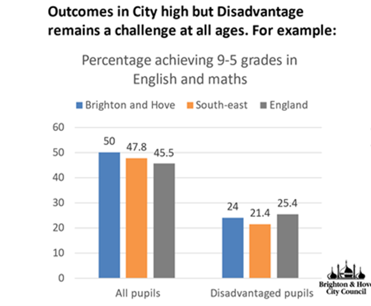
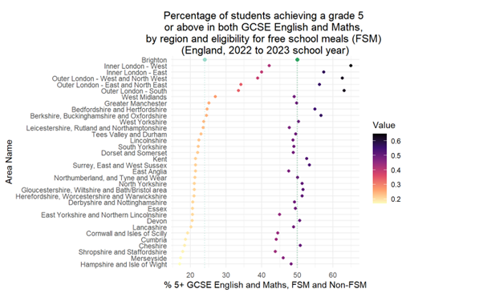
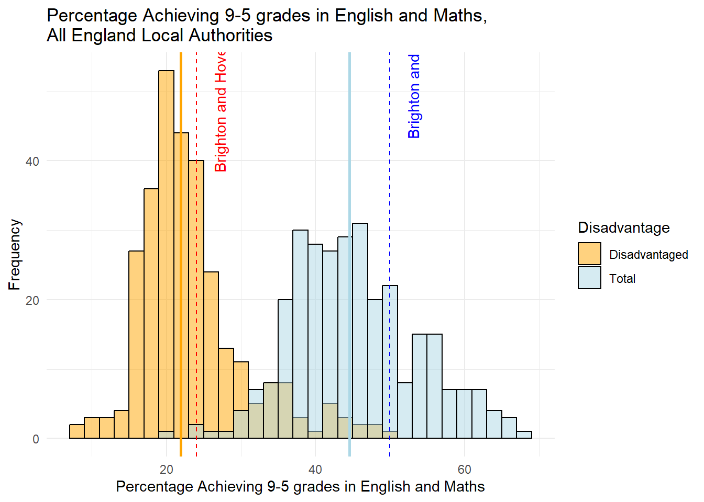
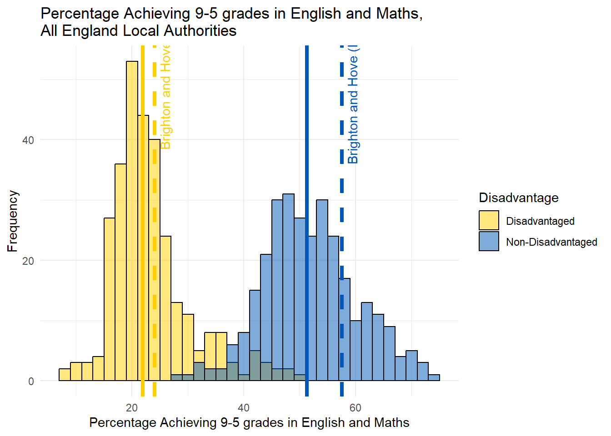
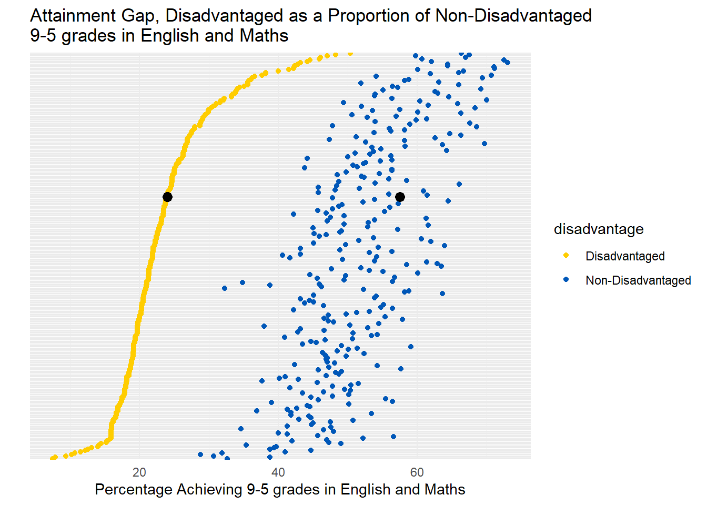
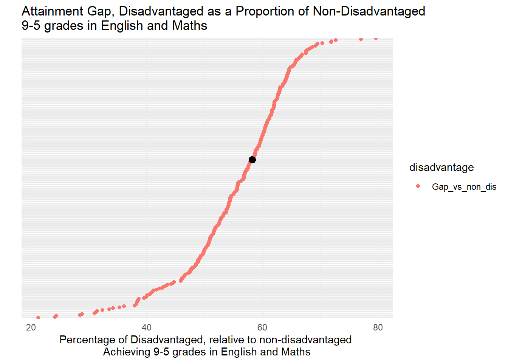
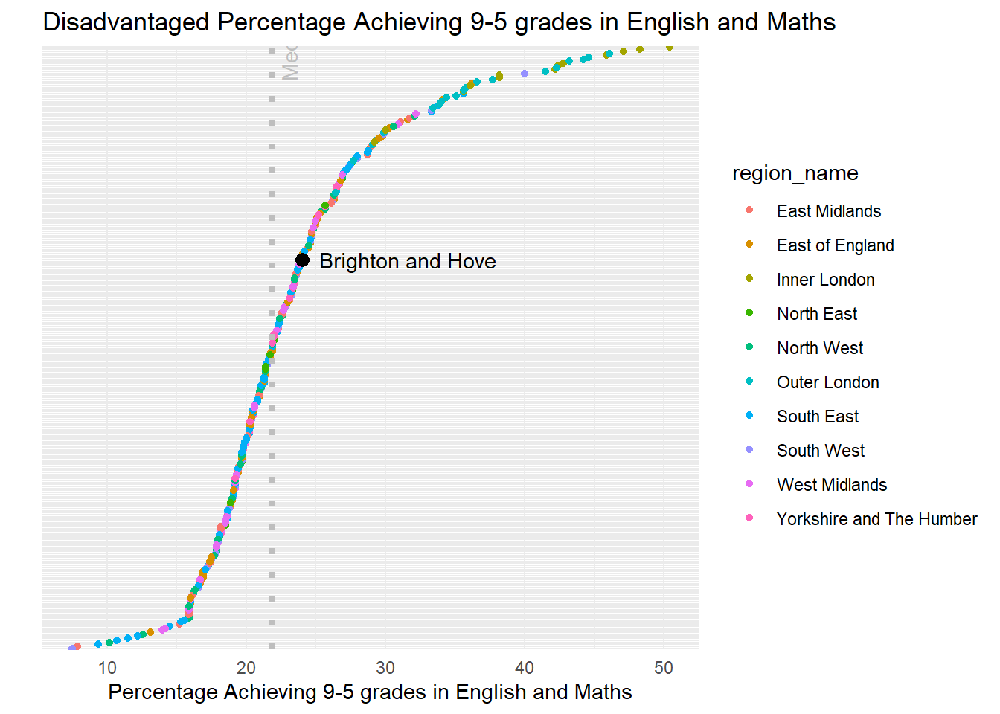
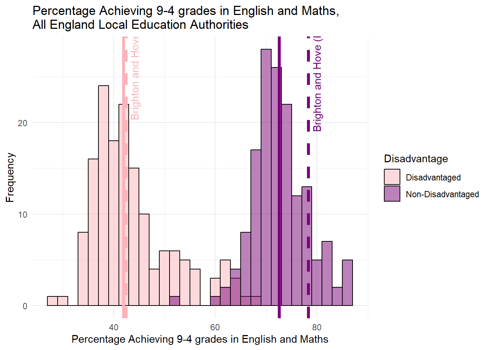
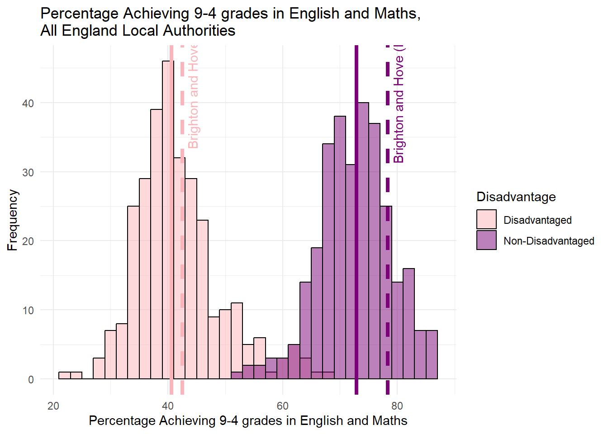
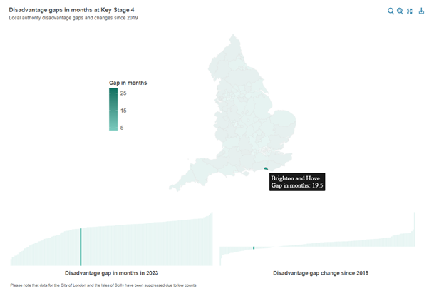

Addendum - Educational Performance in Brighton
Introduction
*Note, I have made a few adjustments below to the original piece - adjusting for both Higher Tier Local Authorities. I have also included an additional section on the Education Policy Institute’s Work, especially related to their methodology in their Annual Report - https://epi.org.uk/annual-report-2024-foreword-executive-summary/ and why it should be given more weight than the raw DfE data - I have also, for completeness, provided graphs for Percentage of pupils achieving grades 9-4 or above in English and mathematics GCSEs - (in addition to 9-5).
First of all, I’d like to say that I’m very grateful the Cllr Taylor and his team have been reading my analysis so carefully.
Yesterday I received an email from Jacob alerting me that he’d discovered an issue and was concerned that some of the messages from parents he’d been receiving were using incorrect facts. In particular, in relation the attainment gap I reported in this section of my last piece.
Having looked at the point he raised and having carried out some new analysis with the data that the council had originally used to produce the graph below, I’m happy to report that almost all of observations I originally made still stand - and indeed are strengthened further by the new analysis, so I would like to thank them for that.
I would like to state that while I am very grateful for the link to some actual, real, verifiable data, it’s disappointing that the first time the council were able to provide this was two days AFTER the end of the engagement exercise. This goes back to my original point in my very first piece of work - that the council need be more transparent and up-front with the data they use to make decisions and indeed charge their rhetoric. I’m glad that they have now provided this data, but it would have been much more useful to have had it at the start of the process.
One observation on the attainment gap has changed in the light of this new analysis - the gap in Brighton is larger relative to the rest of the country than originally estimated from the Council’s original graph (which I assume will now be corrected). However the new data has allowed us to explore why this is. We can now see very clearly that both disadvantaged pupils AND non-disadvantaged pupils perform ABOVE the national average (median) in England (even including London).
I’ll repeat that - In Brighton both disadvantaged pupils AND non-disadvantaged pupils perform ABOVE the national average (median) for GCSE grades 5-9 Attainment in Maths and English. Above.
The gap is because the non-disadvantaged pupils perform even better than average - meaning the gap is larger relative to other places with similar achievement for disadvantaged pupils.
Here is the original graph from the council:

Now the graph that Cllr Taylor was concerned about in my last analysis was this one:

Now, the issue Cllr Taylor alerted me to relates to the two green dots at the top of this chart.
Here’s the point he raised: “You have compared Disadvantaged Attainment to All Pupil attainment, which is not how the Attainment Gap is calculated. Disadvantaged attainment has to be compared to Non-Disadvantaged Attainment (not all pupils).”
A good point - and a correct one. An even better point had it have been raised when he put his own slides together, as you can see that this is exactly what the bar chart at the top is showing! I used their data. In drawing these green dots and time was short and data was sparse, I took the figures from the Council graph.
But mistakes happen - the rest of my graph above (below the green dot) was actually using FSM regional data - not ideal, but the best I could lay my hands on at the time without a link to the original data. As I note above, Cllr Taylor was kind enough to send me the link to the original data, and after a bit of digging around I found the correct file and have been able to correct the analysis.
New Analysis - Are we still stained?
Well, short answer is, no. We are no more stained than we were before. And much of the stain (the attainment gap in Brighton being worse than the attainment gap nationally) is actually an artefact of the council using the wrong ‘average’ - as I will explain below. Had they used the correct average - the median - a different picture emerges.
There still appears to be some confusion online, which hopefully this bit of analysis will clear up once and for all.
Cllr Taylor - “Non-Disadvantaged attainment in Brighton and Hove was 57.5 in 2022-23, giving us an attainment gap of 33.5.” - looking at the data, this observation is true.
Cllr Taylor on Facebook - “Indeed - when compared to individual local authorities, our city has the 16th highest attainment gap of 152 local authorities - nearly in the top decile.” This observation is true, when looking at just one of the possible attainment gap variables, - the Percentage of pupils achieving grades 5 or above in English and Mathematics GCSEs - however as is pointed out by the Educational Policy Institute in their annual report - the average GCSE score across English and Maths in England, was 4.6. So in using this variable is effectively representing the - above-average attainment gap. However this is the ‘raw’ gap (i.e. a gap of 10-20% pass rate is the same as a gap from 30-40% pass rate - same gap, very different story).
Data
GCSE Grade 5-9, English and Maths, 2024
The file I have used in the analysis below is called 2233_sl_lad_fsm_dis_data_revised.csv (downloaded from here) – I am now almost certain that the data in Cllr Taylor’s original graph comes from the field “pt_l2basics_95” - Percentage of pupils achieving grades 5 or above in English and Mathematics GCSEs. Even more specifically, the 50% for Brighton comes from cell W266 in that file and the 24% for disadvantaged pupils comes from Cell W262 in the same sheet.
I pre-filtered that file above (I know, I’d normally do it all in R but today I did filter in excel first - slaps-wrists - but I really wanted to eyeball the data first to make sure mistakes did not creep in). Those two files, derived from 2233_sl_lad_fsm_dis_data_revised.csv can be downloaded from here and here. (note in the underlying code, I have now adjusted to read the original file in and filter and aggregate on the fly). OK, so we’re all set.
Analysis
We can plot that Brighton data. And even better than showing England and the South East, we can show all Local Authorities (upper and lower-tier now) in England. This gives us a much better way of comparing where Brighton sits relative to everywhere else. We can view this data below in a histogram:

Figure 1 - Disadvantaged Pupils vs Total
First thing to say is I am aware that this is still the “wrong” data - the disadvantaged pupils in this graph are also included in the Total - so double counted. I will correct this in the next graph, but it’s useful to have this here to see that it actually doesn’t make a huge amount of difference. Still, it’s worth doing things properly.
The second thing to note is The median values for disadvantaged pupils and advantaged pupils are shown by the solid lines, with the Brighton and Hove values in dashed lines.
As an important aside, I have used the median value as my measure of ‘average’ here - this is actually quite important and something the Council overlooked in their original bar-chart shown at the top where it appears they have used the artithmetic mean. Both are measures of central tendancy (mode being the other one that you might have heard of at school), but median is more appropriate where there there might be outliers (London, for example) and a a skewed distribution (more values at one end of the distribution as we can see in the disadvantaged historam above), and the reason why I have used it here. (There are various online guides as to when to use Median rather than mean, but most will probably start with wikipedia - this BBC Bitesize guide is also genuinely great - https://www.bbc.co.uk/bitesize/articles/z99jpbk)
Relatedly, much of the original “stain” that was identified was because the figure of 25.4% for England was the arithmetic mean for the country (according to the data - [40,074/157,963]*100). This is the average disadvantaged 9-5 Maths GCES Pass rate across all children in the county. However, if we took all of local pass rates for each local Authority - e.g. Brighton and Hove = 129/537 = 24% - and do the same for every other local authority, then median is the middle value in this set - and is 21.9%. Brighton is above average - as we already know by looking at the histogram above.
The third thing to note is this is a histogram. Not a bar chart. Each bar represents a count of local authorities that fall into the range of the x-axis value. It’s a nice way of seeing where Brighton sits relative to every other local authority in the country. If you look where Brighton is (on the blue side of the graph), it means there are another 22 local authorities (out of 298) whose total number of pupils achieving 9-5 grades in English and Maths is between 49-51%.
As the dotted lines for Brighton fall to the right of the solid vertical lines, it means that Brighton is above the median for 9-5 Maths and English GSCE grades for both disadvantaged and advantaged pupils. Advantaged pupils do achieve a bit higher above the average than disadvantaged pupils.
Disadvantaged vs Non-Disadvantaged Pupils
Below is a slightly different histogram created with slightly different rows of data from the same dataset. The disadvantaged data are exactly the same, but this time it is paired with data for non-disadvantaged pupils. If you add the two together, you get the total data from the previous graph. This is a better way of representing the data as it doesn’t double count the disadvantaged pupils.
Minor Adjustment for Geography
There was a bit of a flurry of excitement on Facebook as originally in this piece I had used standard (“Lower Tier”) local authorities (as this is geography the data comes in). My lack of understanding was mocked as I should have known (as everyone surely does!) - that what matters for education policy is “Upper Tier” local authorities - sometimes known as Local Education Authorities. Ok fine, now is not the time to get into distributions of academies and free schools which are outside of the control of local authorities, let’s just see if upper tier makes any difference.
I managed to source a lookup-table from the ONS so have been able to aggregate the original data up to the Upper Tier level for comparison. My data now exactly matches that used by Cllr Taylor, so we’re all good.
As it’s the same data, just a bit more aggregated, things haven’t changed much. We get some statistical smoothing going on (see my last piece for a bit of a guide on statistical smoothing) which shifts the medians a little - about 1% for the disadvantaged group, but nothing which changes the interpretation. See below.

Figure 2a - Achievement, disadvantaged and non-disadvantaged, 153 “Upper Tier” Local Authorities (Local Education Authorities - LEAs)
Figure 2b - Achievement, disadvantaged and non-disadvantaged, 153 “Upper Tier” Local Authorities (Local Education Authorities - LEAs)
Note - text below refers to the bottom of these two histograms - the original lower-tier data. When aggregating to ‘upper-tier’ the median for disadvantaged students is 22.97%. At lower tier, the median is 21.9% - so about 1% different. Brighton is the same size and shape in both tiers so remains at 24% - so either way, 1-2% above the national average.
What’s changed? Well not very much (although I have used Brighton and Hove Albion colours in this one for fun - if they look a bit faded it’s because of the transparency!). The frequency distribution has changed on the right as the data are different, but:
Brighton still does better than average for both its disadvantaged and non-disadvantaged pupils.
The second important thing to note is the size of the gap between the solid line and the dotted line for disadvantaged and non-disadvantaged pupils. It is smaller on the left than on the right. This is because the non-disadvantaged pupils are doing better than the disadvantaged pupils, relatively speaking. Although they are both performing above the national average.
The attainment gap is the gap between the two dotted lines and in this data, as Cllr Taylor correctly pointed out, it’s 33.5%.
But how does attainment and the gap compare with the rest country?

- The graph above ranks every local authority in England by the performance of disadvantaged pupils, while also displaying, to the right, the relative performance of the non-disadvantaged pupils. Each pair of dots represents a single local authority.
- And it’s clear to see that Brighton is in the top half - as we would know from the histogram above.
- It’s also clear that the relationship between disadvantaged and non-disadvantaged pupils is not the same across the country. In some places, the gap is much smaller, in others larger, but no discernible pattern between the two at this stage.

But what about the gap? Given there is so much noise, it would make sense to try and standardise the gap by either disadvantaged or non-disadvantaged attainment. If we look at the gap relative to advantaged attainment – i.e. how do Disadvantaged students do relative to the performance of the advantaged students in the same local authority – a reasonable way of standardising - we get the plot above.
What this shows is that in Brighton, the gap of 33.5% between disadvantaged (24%) and advantaged (57.5%) pupils is around 58% of that higher level of achievement in the city. Lower figures are better in this particular graph, so this gap is not in the top half of the English league table, but as the histogram above shows from the same data, this is because non-disadvantaged students are doing even better than the disadvantaged students, who are already doing better than average.

- One final plot adds a regional perspective - again, this is just disadvantaged pupils, but it’s clear to see here the effect of London on the data. Brighton is in the top half of the country, a very large number of local authorities at the top of the distribution are in London.
GCSE Grade 4-9, English and Maths, 2024
For completeness, I have also included the same analysis for the 4-9 grades in English and Maths. What you will notice is Brighton is still above average, but attainment of disadvantaged pupils is closer to the national average than for 9-5 grades. My overall observations about the gap do not change, however, it is worth asking the question why the attainment gap appears even better than this in the recent work carried out by the Education Policy Institute?


The Education Policy Institute Work
“The Education Policy Institute is an independent, impartial and evidence-based research institute that aims to promote high quality education outcomes for all children and young people, regardless of social background.” (from their website - https://epi.org.uk/our-mission-and-purpose/)
Every year they produce an annual report covering all aspects of educational inequalities in England and they are the gold-standard research organisation in this field.
In their most recent report, the gap between disadvantaged and non-disadvantaged pupils in Brighton and Hove at the secondary level compared to the rest of the country is considerably better than is suggested by the aggregate statistics published by the DfE - https://epi.org.uk/annual-report-2024-local-authority-gaps-2/

In the interactive (on their site - visit via the link above) map above, we can see that, in the bottom left, rather than ranking near the bottom of the league table for education gap as the raw DfE data suggests, the EPI rank Brighton in the top third of all LEAs in England. Furthermore, it is one of the few LEAs that have shown improvement - a decline in disadvantage - since 2019 (bottom right).
So what’s going on? Well, in their methodology section, they explain some differences in how they measure disadvantage. https://epi.org.uk/annual-report-2024-disadvantage-2/ - what they outline in their “How do we measure the disadvantage gap” box, they state that (through using the National Pupil Database (NPD) - which enables students to be tracked over time, rather than as a single-year snap-shot) they define disadvantage as any student who had received Free School Meals in the last 6-years. Therefore capturing a more comprehensive picture of disadvantage than a single year snapshot which might see some students go just over the very low threshold for free meals in one year.
Anything else? Yes, they also then order pupils and attainment by their rank for disadvantage and non-disadvantage and compare these ranks with each other - a method known as the ‘mean rank difference’. This technique is useful where you have a skewed distribution of values - which we have here with London way out-performing other LAs and LEAs in the country.
One more thing - as they have longitudinal pupil data from the NPD, they are able to express the attainment gap in months of learning - an intuitive measure which shows, on average, how many months earlier non-disadvantaged students attained the same level, relative to the disadvantaged students. The 2024 annual report local authority profiles also show that between KS2 and KS4, Brighton and Hove moves up the rankings considerably, giving even more weight to the observation that its secondary schools are performing well.
Given that the EPI are THE experts in the field of educational inequalities, rather than making errors with central tendency or arguing over aggregations of local authorities, it might be more useful for the Council to defer to this evidence from the EPI if there were ever any doubts that Brighton, relative to the rest of the Country and despite some acute problems, is actually doing an above average job of helping all of its students, already. Something that should be being built upon, rather than being torn down.
Conclusions
Having carried out this new analysis and looked back at what I observed in my last piece, it doesn’t change very much at all in relation to the original interpretation of similar data I posted – indeed it places some of the conclusions on even firmer foundations, with only one small change in interpretation relative to the gap.
Let’s take each one of my previous conclusions in turn:
- Old interpretation - Compared to the national average for England, Brighton’s attainment at GCSE for pupils on Free School Meals is lower, however, that national average is being pulled up considerably by London, which is performing between 6.5% and 15.1% better than the best-performing non-London region
- New interpretation - Compared to the national average across all Local Authorities in England, Brighton’s attainment at GCSE for disadvantaged pupils is HIGHER, and that national average is still being pulled up considerably by London, where most local authorities in the Capital are performing many percentage points higher than the best-performing non-London local authorities. If we take the 31 (In think City merges with Westminster) London Boroughs out of the equation - which all rank above Brighton and have 27 of the top 31 Local Authorities - Brighton would rank 76th out of 267 Local Authorities for disadvantaged attainment - put another way, this would be in the 3rd-best decile.
- Old interpretation - If Brighton were one of these 33 regions, it would still be achieving better results for pupils on FSM than 2/3 of other places in England. If we take London out of the equation, it would appear in the top 5.
- New Interpretation – For disadvantaged Pupils, Brighton ranks 107 out of 298 local authorities (in the dataset) on this level of attainment – this means it is achieving better results for disadvantaged pupils than in around 2/3 of other local authorities in England. If we take London out of the equation (which has 27 of the top 31 local authorities on this measure), it would rank considerably higher.
- Old interpretation - Rather than being ‘a stain on our city’, it should be regarded as a badge of pride that Brighton and Hove is able to achieve such good results for pupils in receipt of Free School Meals, relative to the rest of England.
- New interpretation - Rather than being ‘a stain on our city’, it should be regarded as a badge of pride that Brighton and Hove is able to achieve such good results for disadvantaged pupils, relative to the rest of England. It is performing above the national average already for both disadvantaged and non-disadvantaged students.
- Old interpretation - If we look at the attainment gap between those who are on Free School Meals and those who aren’t as well, Brighton still performs far better than average, even with London in the equation. If Brighton were one of the regions above, it would be just outside the top 1/3.
- New Interpretation - If we look at the attainment gap between disadvantaged pupils and non-disadvantaged pupils, Brighton performs worse than average if we look at the raw gap, even with London in the equation. If we look at the gap relative to the non-disadvantaged pupils in the city, it would rank 130th worst out of 298 lower-tier local authorities – so in the bottom half. However, if we examine the national medians for disadvantaged and non-disadvantaged, Brighton is above average for both and it’s larger gap is only because non-disadvantaged students are doing even better than average, not because disadvantaged students are doing worse than expected.
- Furthermore, research from the Education Policy Institute which uses more detailed longitudinal data to assign both disadvantage and measure progress gaps in months rather than grades and has a research design which is able to account for the biassing effects of London through using the mean rank difference, reveals that Brighton and Hove does even better on its education gap than the DfE data suggests. Indeed it is one of the few Local Authorities not only to have reduced its gap since 2019, but also shows a significant improvement between KS2 and KS4 - giving even more weight to the argument that its secondary schools are performing very well.
- My comments on this being a distraction for the real problem existing in Whitehawk – still remain valid. I said it before and will re-iterate here: Statistics are incredibly useful tools for developing an understanding of systems of interest, but aggregation - however it is done - while revealing overall trends and patterns, can mask important concentrated local issues.
- It has become very clear to me while doing this analysis over the last few weeks that there is a real and very acute problem with educational disadvantage in some parts of the city - and particularly in the near-East of the city here Whitehawk is located and where students from that part of town have no choice at the moment other than to travel further than other students in the city to attend Longhill.
- The city is clearly already doing well for some of its disadvantaged students (disadvantage while is has some pockets of spatial concentration in the city, is also something which occurs across neighbourhoods). But it is not doing well for all.
- Casting the whole city as a failure - a community with a stain on it - is demonstrably unfair. The attainment gap owes more to high achievement for non-disadvantaged students than it does to under achievement for disadvantaged students, but that is not to say that we shouldn’t try to do better for those students and bring the bottom end up. I would argue that if bringing the top end down reduces that gap - through forcing more non-disadvantaged students to travel long distances to attend school and impacting their learning, while it could be touted as a statistical victory, it would be a detriment to the city.
- I will re-iterate. From all of the evidence I have seen, it is not clear to me at all that playing with catchment area boundaries and reducing the intakes for schools already doing incredible things to close the educational gaps in the city, will lead to better outcomes for those who are most disadvantaged. The council should focus its attention, not on ill-conceived tinkering, but in producing a serious long-term plan and more immediate actionable ‘sticking plaster’ option to help bridge the gap for the most deprived in the city.